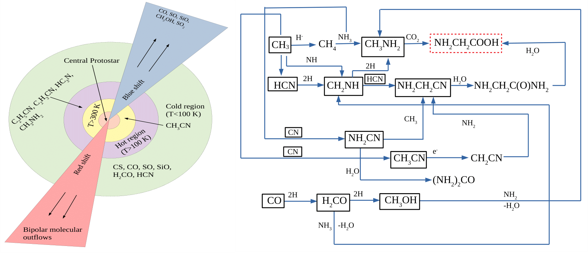

Astrochemistry is an interdisciplinary field that combines astronomy, chemistry, and physics to study the formation, interaction, and evolution of atoms and molecules in space. It explores how chemical processes occur in extreme environments such as interstellar clouds, protoplanetary disks, comets, planetary atmospheres, and hot cores.
Hot Molecular Cores (HMCs) represent an early stage of high-mass star formation regions (M > 8 M☉), characterized by compact regions less than 0.1 parsec across that develop around massive protostars. Because of their small size and proximity to young stars, these environments become warm, with typical temperatures ranging between 100 and 300 K. This heating comes directly from the radiation of the forming star and is strong enough to evaporate icy mantles from dust grains, injecting molecules into the gas phase.
In addition to being warm, HMCs are also extremely dense, with particle densities reaching values as high as 106–108 cm−3. Such high densities allow molecules to collide more frequently, which in turn drives a rich network of chemical reactions. As a result, hot molecular cores are chemically diverse and are known for their large inventory of complex organic molecules. Among the most common species detected are methanol (CH3OH), methyl cyanide (CH3CN), formamide (NH2CHO), and methyl formate (HCOOCH3), all of which are considered important for the chemistry leading to prebiotic compounds.
The lifetime of a hot molecular core is relatively short, lasting only about 104–105 years before it evolves into an ultracompact H II region, where the intense radiation from the young star ionizes the surrounding hydrogen. This makes HMCs a brief but crucial stage in the process of massive star formation. Because of their warm temperatures, high densities, and chemical richness, they are regarded as natural laboratories for studying the origins of prebiotic chemistry in the universe.
The ultimate goal of astrochemistry is to understand how simple atoms combine to form complex organic molecules, some of which are potential precursors to life.

Spectroscopy, radio/millimeter astronomy, infrared observations, laboratory experiments, and computational simulations are key techniques.
Next-generation telescopes (JWST, SKA), exoplanet atmospheric studies, quantum simulations of reactions, and interdisciplinary work will drive the field forward.
Astrochemistry is not just about molecules in space, it is a story of cosmic evolution. From simple hydrogen clouds to planets capable of hosting life, astrochemistry traces the steps of chemical complexity in the universe. Its importance lies in unraveling the ultimate question: How did the building blocks of life originate and spread across the cosmos?